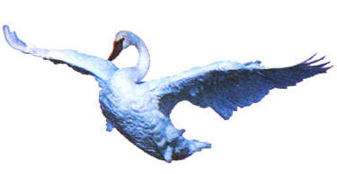

October and November are when whistling swans, after summering in subarctic and even arctic lands, migrate through the Great Lakes region and arrive at their wintering grounds on the Pacific and Atlantic coasts. The whistling swan owes its name not to its vocal abilities, but instead to the "singing" of its beating wings. Its largest wintering ground appears to be in Maryland on Chesapeake Bay. The swans you see in summer floating serenely at your local park are most likely mute swans-partly domesticated birds imported from Europe. The mute swan can easily be distinguished from the whistling swan (as well as America's only other variety, the trumpeter swan) by its neck, which is not held straight but rather in an exquisite curve.
Our third swan species, the trumpeter, is somewhat larger than the whistling swan but otherwise looks similar from afar. Unfortunately, any straight-necked swan seen today in either the eastern or western U.S. is probably a whistling swan. I say unfortunately because the trumpeter was once common across all of America until it was hunted-sometimes the flightless young were even lassoed from boats-into near-extinction. Protection finally came by way of conservation laws passed in 1924, but by then the trumpeter's numbers had dwindled to an estimated 50 birds. Fortunately, 30 years later, the population was back up to 642 and even now the recovery continues. But you are still unlikely to see a trumpeter outside the northern Rockies.
What did we almost lose in the trumpeter swan? The largest of North America's waterfowl, a snow-white bird weighing as much as 36 pounds, with a body up to six-feet long and a wingspan up to ten-feet wide.
-Fred Schaaf
|
 |
|
|